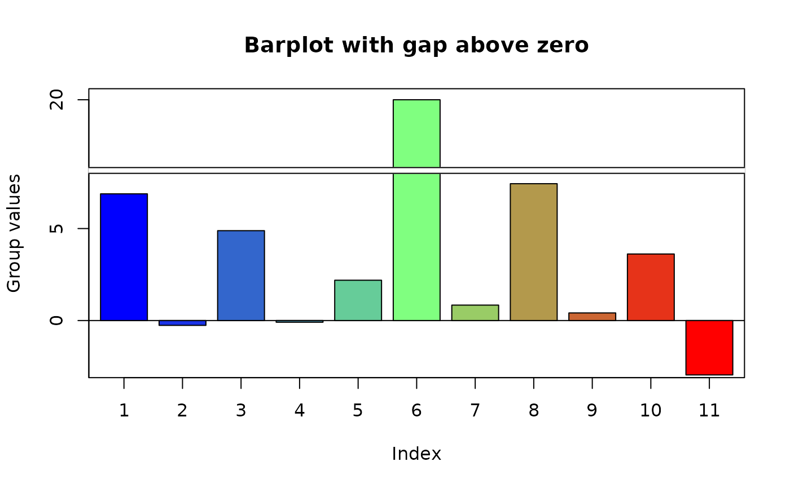
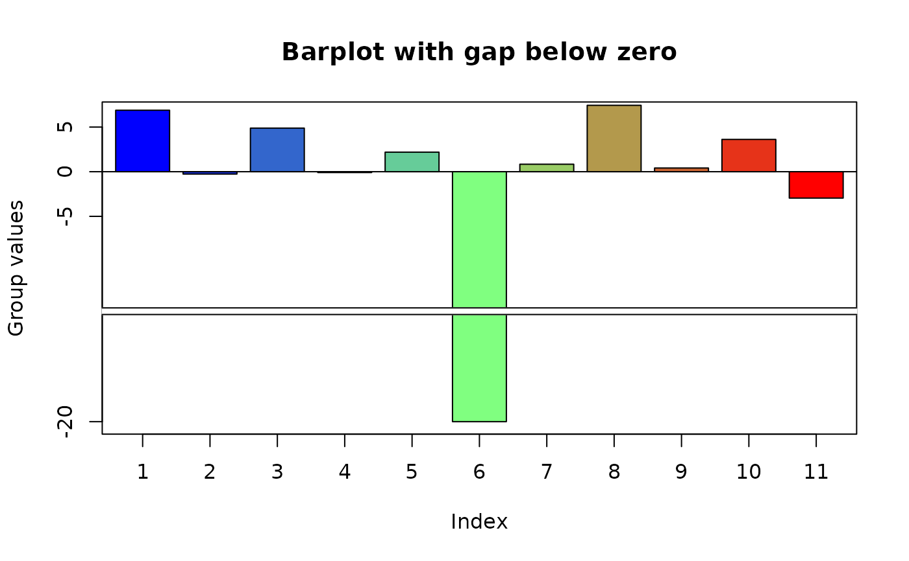

Display a barplot with a gap (missing range) on one axis
gap_barp.RdDisplays a barplot with a missing range.
Arguments
- height
a vector of data values
- gap
the range of values to be left out
- width
the proportion of bar width to bar spacing divided by 2. width=1 means no spaces between the bars.
- names.arg
labels for the bars.
- col
color(s) in which to plot the values
- main
title for the plot.
- xlab
label for the x axis
- ylab
label for the y axis
- xlim
Optional x limits for the plot
- ylim
optional y limits for the plot
- x
optional x positions for the bars.
- height.at
explicit positions for the y axis ticks
- height.lab
explicit labels for the y axis ticks.
- ...
arguments passed to barp.
Details
Displays a barplot omitting a range of values on the X or Y axis. Typically used when there is a relatively large gap in the range of values represented as bar heights. See axis.break for a brief discussion of plotting on discontinuous coordinates.
If the user does not ask for specific y limits, the function will calculate limits based on the range of the data values. If passing specific limits, remember to subtract the gap from the upper or lower limit.
Examples
oneout<-c(rnorm(5,sd=5),20,rnorm(5,sd=5))
gap_barp(oneout,gap=c(8,16),xlab="Index",height.at=c(-5,0,5,20),
ylab="Group values",main="Barplot with gap above zero")
#> Warning: some heights within gap

oneout[6]<--20
gap_barp(oneout,gap=c(-8,-16),xlab="Index",height.at=c(-20,-5,0,5),
ylab="Group values",main="Barplot with gap below zero")
